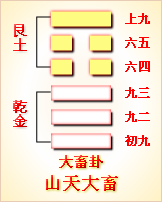
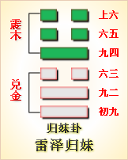

高岛易断 - 59风水涣
高岛易断 59 风水涣
卦体《乾》四与《坤》二易位，《乾》变《巽》，《坤》变《坎》，合而成《涣》涣者，散也，《坎》为水，水之散，万派分流；《巽》为风，风之散，四郊遍被。《巽》上《坎》下，象取风行水上，是风水相遭。水则悠然长逝，风则过而不留，有涣之象焉，此卦所由名《涣》也。
涣
［78］
：亨。王假有庙，利涉大川，利贞。
《正义》曰："散难释险，故谓之涣"；难散则理平，险释则心通，故亨。卦体三阴三阳，自《乾》《坤》来，《乾》为王，故曰"王"。旁通《丰》，《丰》《彖》辞曰"王假之"，故曰"假"。上互《艮》，《艮》为宗庙，故曰"有庙"。《坎》为大川，《巽》为利，下互《震》，《震》为足，有涉之象，故曰"利涉大川"。庙者，鬼神之所在也。《中庸》言"鬼神之德，洋洋乎如在其上，如在其左右"，涣之至盛者也。"大川"，众流之所归也，注焉而不满，酌焉而不竭，涣之显著者也，于假庙见扬诩之盛，于涉川得利济之宏。然《涣》虽主散，形象则发扬于外，而精神贵凝聚于中，故曰"利贞"。
《彖传》曰：涣，亨，刚来而不穷，柔得位乎外而上同。王假有庙，王乃在中也。利涉大川，乘未有功也。
《序卦传》曰："兑者，悦也。悦而后散之，故受之以涣。"盖以《涣》继《兑》，谓能悦则涣，涣则亨，是《涣》之亨，亦即《兑》之亨也。为卦《坎》刚自《乾》而来，坎水长流，无有穷极，故曰"刚来而不穷"。《巽》柔得位于外，《巽》风行水，飘然俱往，故曰"柔得位乎外而上同"。是刚在中而不穷于险，柔在外而得与五同，所以能散释险难，而致亨通也。至险难既散，王乃有事庙中，得以精诚上假，故《传》释之曰"王乃在中"，是就其德而言之。涉川者涉难也，即《系辞》所谓"舟楫之利，以济不通，盖取诸涣"者是也，故《传》释之"乘木有功"，是就其象以譬之。
以此卦拟人事，一身所患，胸怀不畅则疾生，意气不舒则争启；一家所患，内外间隔则弊成，上下壅阻则乱作。有以涣之，则百弊解散，而万事亨通矣，譬如云雾阴冥，得风而消解；譬如沟浍污浊，得水而流通。此君子所以取象于《涣》也。人生作事，每患性质之多偏，亦患位置之不当，如能刚来而济柔，动于内而无险困之难，柔往而辅刚，止于外而无违逆之乖，斯无往不利，亦无事而不亨也。行见积其诚以事神，而鬼神来假，因其利以涉难，而舟楫有功，是皆因涣而推及之也。盖涣于内则气畅，涣于外而理顺，涣以处己即心平，涣以待人则情洽，一生疑虑，涣然水解，《涣》之为用甚神矣。
以此卦拟国家，国家之于人民，欲其聚不欲其涣也；国家之于财用，宜其聚复宜其涣也，而独至于险难，则务取其涣焉。险不涣则危无以济，难不涣则乱无以消。王者秉刚中之德，处至尊之位，欲以解天下之纷乱，散天下之郁结，挽回国运之困厄，使斯民咸得其欢悦，此《涣》卦之所以次《兑》悦也。卦以九二为刚，二自《乾》来，故曰"刚来"；以六四为柔，四为阴位，故曰"得位"。刚不穷而涣乃见其亨，柔同上而涣自得其正焉。推之涣以享祖，假庙所以尽其诚也，于以见鬼神之德之盛矣；涣以致远，涉川所以济其险也，于以见舟楫之功之普矣。盖天以风之疏散，化育群生，地以水之流通，贯注四海。王者亦取其象，以平天下之乱，以解万事之纷者，莫如此涣而已。
通观此卦，"涣者，离也"，离者复合，散者复聚，故全卦有离合散聚之象。刚来不穷，柔而上同，卦之体也；王在庙中，"乘木有功"，卦之用也；曰"亨"，曰"贞"，卦之德也；曰"庙"，曰"川"，卦之象也。《大象》曰，"先王以享帝立庙"，即《彖》所谓假庙之旨也。盖庙立则昭穆之位定，王假则祭享之诚通，斯灵爽藉是而聚，即民心藉是而系焉。《涣》之正所以合之也，故《萃》亦言"王假有庙"。"萃者，聚也"，以萃而假，神志一焉；以涣而假，精诚通焉。《萃》与《涣》相反，而适以相须，故取象从同。至《易》言"利涉大川"者三，皆取《巽》木，《益》曰"木道乃行"，《中孚》曰"乘木舟虚"，《涣》则曰"乘木有功"，盖谓王者声名洋溢，内则孝享夫祖考，外则化被夫蛮夷，是以舟楫之利，独取诸涣者，此也。六爻言涣，皆隐寓聚象，故初遇险而顺，二阳来脱险，三临险忘身，四成《涣》忘人，五居尊忘天下，六超然遐举，涣以"远害"，所谓恭己无为，化驰若神者矣。故卦以三阴最吉，三阳次之。说者谓《易》道尚刚，一偏之论也。
《大象》曰：风行水上，涣，先王以享于帝，立庙。
先王见风之虚，得鬼神之象，见《坎》之盈，得祭祀之象。夫风无形，遇水而成形，非水则风不可见；鬼神无睹，入庙而如睹，非庙则上帝祖考不可见。聚则为有，散则为无，鬼神之情状，犹风之行水上也。人心诚敬之所聚，莫如鬼神，故大难始定，人心未宁之时，享帝而告成功，立庙而事祖考，聚将散之神灵，安镇之以接天神，交祖考。盖物本于天，人本于祖，故享帝以报其生成之恩，立庙以报其功德之盛，使天下之人，皆尊尊亲亲，不忘其本，以聚人心之涣散，故曰"先王以享于帝立庙"。
【占】 问时运：运途亨通，有乘风破浪之概。
○ 问战征：利用海军。
○ 问营商：财水流通，得天神护佑，大利。
○ 问功名：风随帆转，水到渠成，有即日成名之象。
○ 问家宅：宜祷告神祗，自然获福。
○ 问婚姻：中男长女，自成佳偶。
○ 问疾病："风行水上"，去而不留，病象危矣；立庙"，有魂归窀穸之象，故凶。
○ 问失物：难得。
○ 问六甲：春夏生女，秋冬生男。
高岛易断 初六：用拯马壮，吉。
《象传》曰：初六之吉，顺也。
初处《坎》之下，《坎》为险，初乃始陷于险者也。陷《坎》者，利用拯，何以拯之？初与二近，二得乾气，《乾》为马，《乾》健故"马壮"。初得二拯，如马之因风而走，得以脱险也，故"吉"。按；《明夷》亦曰"用拯马壮，吉"，《明夷》下互《坎》，二动为《乾》，故"用拯"亦取《乾》马，与《涣》初同象。《传》以"顺"释之，初本《坤》体，《坤》为顺，以《坤》之顺，用《乾》之健，是以吉也。《明夷》《传》曰"顺以则也"，其旨亦同。
【占】 问时运；运多险难，幸而遇救，危而反吉。
○ 问战征：初次临阵，赖战马精良，得以解围出险，故吉。
○ 问营商：资本微薄，深幸同事相助，得以获利。
○ 问功名：行午马运，必可成名。
○ 问家宅：新建大厦，好有禄马临向，吉。
○ 问婚姻：《乾》造以肖马者吉。
○ 问疾病：病宜急治，得遇马姓医士为吉。
○ 问行人：驿马已动，即日可归。
○ 问六甲：生男。
【例】 友人某来，请占气运，筮得《涣》之《中孚》。
断曰：初六当《坎》之始，"坎者，陷也"，如身陷坎险，一时难以自脱。初爻偶体属阴，用以拯者必藉阳刚，马《乾》象，得《乾》刚之气，故足以拯之，是初以遇拯得吉也，即卜筮书所谓"绝处逢生"之象。今足下占气运，得初爻辞，知足下现时运途，正在困难之中，幸赖朋友，力为救护，得以脱离灾厄。足下惟当顺从其言，自可逢凶化吉。此友或系肖马，或系姓马，当必有暗合其象者。《易》占之神妙，往往不可测度，足下后当自知之。
高岛易断 九二：涣奔其机，悔亡。
［79］
《象传》曰：涣奔其机，得愿也。
九二以阳居阴，象取以阳假阴，故《彖》云假庙，二当之。下互《震》，《震》为奔，上互《艮》，《艮》为坚木，有机之象；二与五应，机，谓五也。"涣奔其机"，谓假庙而奔就神几，机几字通，即《家语》"仰视榱桷，俯察机筵"是也。王在庙中，洞洞属属，以其恍惚，以与神明交，斯涣者假矣，故"悔亡"。《象传》以"得其愿"释之，谓骏奔在庙，得受其福，故曰"得愿也"。
【占】 问时运：运途顺适，得如所愿，灾悔俱亡。
○ 问营商：运货贸易，得所凭依，可以如愿而偿也，吉。
○ 问功名：所愿必遂。
○ 问战征：虽当涣散败奔，得所依藉，可图恢复，何悔之有？
○ 问婚姻：内卦《坤》体，二变为《乾》成《坎》，《坎》为中男；外卦《乾》体，四变为《坤》成《巽》，《巽》为长女，此配必女长于男。木水相生，佳偶也。
○ 问家宅：此宅眷属有奔败之难，幸在外得所凭依，所谓适我愿也。
○ 问疾病：郁郁不乐，隐几而卧，得遇良医，可以无忧。
○ 问六甲：生男。
【例】 友人栀尾某曰：余曩以己地，出押于某华族，订立券证，约以后日得金，准许备价取赎。至今地价腾贵，照曩时押价，一增其三，某华族因之背盟，指不许赎。余遂使代言人及壮士逼索，某华族惧，乃挽余亲戚某，出为谈判。余不得已以若干金，酬报代言人与壮士，嘱为了事，而壮士意犹不满，迁怒于余，意欲要路狙击，余甚患之。请占其处置如何？筮得《涣》之《观》。
断曰：内卦为《坎》，《坎》者险也，难也；外卦为《巽》，《系辞》曰"巽以行权"，谓《巽》得行其权变也。二爻曰"涣奔其机"，"奔"，奔避其难也，二与五应，谓奔就于五也。五处《巽》中，谓能"巽以行权"，足以涣散其难，故得"悔亡"。就此爻象，教足下奔避于外，自得有人出而处置，可以无悔。
高岛易断 六三：涣其躬，无悔。
《象传》曰：涣其躬，志在外也。
三体坎水，上体《巽》风，三之趋上，如水过风而流，木得水而浮，有相待而涣散者也，故三至上互《艮》，《艮》为躬，曰"涣其躬，无悔"。《象传》曰"志在外"，谓外卦也，志应夫上也。
【占】 问时运：三处《坎》之极，是运当坎险之时，忘身赴难，得以出险，可免悔也。
○ 问战征：能国而忘身，忠勇可嘉，去复何悔？
○ 问营商：运货在外，跋涉风波，备尝艰苦，有重财轻命之象。
○ 问功名：有杀身成仁，名垂竹帛之荣。
○ 问婚姻：有捐躯尽节之志，可悲，可嘉。
○ 问家宅：此宅临坎水之上，宅主宜出行在办，得可免灾。
○ 问行人：未归。
○ 问六甲：分娩在即，生男。
【例】 友人某来，请占气运，筮得《涣》之《巽》。
断曰：《涣》之三爻，正当《坎》难之极，是身陷坎中而不能解脱也；惟赖上爻远来援救，斯得涣然消散，可以无悔。今足下占气运，得《涣》三爻，知足下运途淹蹇，譬如行船入海，正遇风波之险，须得远来巨舟，相为救援，斯能共脱险厄，得远灾悔，以保身命。三爻居内外卦之交，内《坎》外《巽》，《坎》，险也；《巽》，顺也，有出险入顺之象，是以"无悔"。
高岛易断 六四：涣其群，元吉。涣有丘，匪夷所思。
《象传》曰：涣其群，元吉，光大也。
六四居《巽》之始，卦体本《乾》，下画化《坤》成《巽》，《坤》为众，《坤》化《巽》，则其群涣矣。《坎》刚中得《乾》之元，故曰"涣其群，元吉"。上互《艮》，《艮》为丘，丘，聚也，高也，谓既涣其坎险，又复聚而成为高丘，是涣中有聚也，故曰"涣有丘"。四为《巽》卦之主，《系辞》曰，"巽，德之制也"，又曰"巽称而隐"，谓《巽》能因事制宜，隐见无常，化裁之妙，有非寻常所可测度者，故曰"匪夷所思"。《传》以"光大"释之，谓四出《坎》入《巽》，所以化险为夷者，正赖此正大光明之作用也。《坤》曰"含宏光大"，四得《坤》气，四之"光大"，即自《坤》来也。
【占】 问时运：能解脱困难，复成基业，正大运亨通之时。
○ 问营商：绝大手段，能散财济危，又能独成丘壑。
○ 问功名：有独出冠时之概。
○ 问战征：军容之盛，忽散忽聚，忽高忽低，忽而万马无声，忽而一丘高峙，变化之妙，有出意表者，此神化之兵也。
○ 问疾病：散其外邪，又当聚其元气，病自疗矣。
○ 问家宅：邻居旷远，独成一家，自得幽趣，吉。
○ 问讼事："涣其群"，其讼必解矣，吉。
○ 问六甲：生女。
【例】 长崎女商大浦阿启，明治七八年间，管理横滨制铁所。一日将乘名古屋船归乡，预电报知家人，期以某日到家。届期有报，名古屋船于周防遭难，家人惊愕，急以电信问余。余不知大浦氏果否乘船，亦不知此船有否遇险，无已，乃为一筮，筮得《涣》之《讼》。
断曰：此卦《巽》为木，《坎》为水，舟浮海上之象。其辞曰："涣其群，元吉。涣有丘，匪夷所思。""涣其群"者，谓离众人而出险也；"涣有丘"者，谓出险而独在丘上也；"匪夷所思"者，谓不须忧虑也。由是观之，知必脱其难也。
余即以此占，电复长崎，长崎家人得此报，疑信未决。未几大浦有电到家，云已脱险，家人始安。
高岛易断 九五：涣汗其大号，涣王居，无咎。
［80］
《象传》曰：王居无咎，正位也。
五为尊位，《彖》所称"王假"，五当之。号，令也，"大号"，大政令也。五有刚中之德，以天下之险为己险，欲涣散天下之险，以发此"大号"也。"涣汗"者，刘向云：号令如汗，出而不返者。王者无私居，畿甸非近，要荒非远，一人之身，涣之即为万民，一人之心，涣之即为万几，布于四海，犹汗出于身，而浃于四体，故曰"涣汗"。天下之困苦，得仁政而解，一身之邪热，得汗出而消，其所涣一也。三至五体《艮》，《艮》为居，"王居"者，京师也。《论语》所云"譬如北辰，居其所，而众星拱之"者，王居之谓也。"涣王居"者，号令之涣，自近而远，其单敷万方者，要必正位凝命，自王居始也。"无咎"，即"履帝位而不疚"之意，《象传》以"正位"释之，盖以九五为正位，王者居之，得以号令天下。以一亿兆之心，而济万民之险，皆由君德与君位正当之功也。
【占】 问时运：运位得正，语默动静，百事皆吉。
○ 问营商：地位正当，货物流通，所到无不获利。
○ 问功名：位近至尊，名闻天下，大吉。
○ 问战征：号令严明，军威整肃，得奏汗马之勋。
○ 问婚姻：必得贵婿。
○ 问家宅：此宅非寻常百姓之家。
○ 问疾病：一汗即愈。
○ 问六甲：生女，主贵。
【例】 明治二十七年六月，朝鲜有东学党之乱，有朝鲜人朴泳孝者，流寓我邦，眷念故国，实抱杞忧。请余一占，筮得《涣》之《蒙》。
断曰："涣者，散也"，全卦大意，皆以散难释险为主。五爻居尊为王，"大号"者，王所散布之政令也；"涣汗"者，谓其令出必行，犹汗出于身而不返也。足见号令严明，可以解脱险难，奠厥攸居，斯无咎矣。今朴氏占问伊国治乱，得《涣》五爻，玩其爻辞，知伊国祸逼王居。九五者，王也，王当速发号令，诏告天下，涣散凶党，奠定王居，斯可保全而无咎也。卦体下互《震》，《震》属东方，则救护朝鲜者，必在我国也。朴氏可无忧焉。
【例】 明治二十七年六月，山田德明氏，偕美人某来问曰：今回日本兵渡航朝鲜，抑与朝鲜开战乎？余曰；军事机密，非余所知，惟一占，则可以知之。筮得《涣》之《蒙》。
断曰：汗者肤腠之所出，出则宣人之臃满，愈人之疾苦，犹王者之有教令，释天下之难，使之各得其所也，故曰"涣汗其大号"。"涣王居"者，谓大号之宣布，始于王居，盖有自近及远，自内及外之旨焉。卦名曰《涣》，其义总在涣散险难也。今占我国与朝鲜机密军事，得《涣》五爻，乃知我国此番得闻朝鲜乱耗，速发号令，派遣军舰，远航韩国，旁观者以为我国将与朝鲜启衅，玩此爻辞，可信别无他意。
美人得此断辞，遂译作西文，揭布外国新闻。
高岛易断 上九：涣其血，去逖出，无咎。
［81］
《象传》曰：涣其血，远害也。
上与三应，三体《坎》，为血卦，故曰"涣其血"。盖人身血脉以流通为安；以郁结致病，"涣其血"，斯体气舒畅，则忧患自消。"逖"，忧也，《坎》为逖，且上爻居《涣》之极，已出坎险，故曰"去逖出"。逖既去矣，咎自无也。《象传》以"远害"释之，谓上去《坎》已远，故害亦远矣。一说，谓上出卦外，逖，远也，身之有血，犹川之有水，喻言川流通达，风驰远去也。即取《大象》"风行水上"之意。
【占】 问时运：运途通达，灾去福来。
○ 问战征：卦体从《乾》《坤》来，《坤》上曰"龙战于野，其血玄黄"，有战则两伤之象。
○ 问营商：血者，资财也。商舶远出，贸易亨通，可以获利，自无忧也。
○ 问功名：有投笔从军之象。
○ 问婚姻：有远嫁之象。
○ 问家宅：宅主防有血光之灾，远避可以无咎。
○ 问疾病：是气血淤结之患，宜疏通脉络，可以免灾。
○ 问失物：此物已去远，不可复得。
○ 问讼事：宜远出避之，无咎。
○ 问六甲：生女。
【例】 友人某来，请占气运，筮得《涣》之《坎》。
断曰：《涣》者脱难之卦，上处《涣》终，为困难消散之时也。今足下占气运，得《涣》上爻，知足下目下险难已解，譬如病者，血脉融通，忧患悉去，可以无咎矣。上爻《涣》象己终，此后出《涣》入《节》，节财节欲，足下皆当留意焉。
【例】 三十一年，占英国与俄国交际，筮得《涣》之《坎》。
断曰：《涣》卦三阴三阳，本从《乾》《坤》《否》来，上居《巽》极，即《乾》之上，阳亢则战，有"其血玄黄"之象，故曰"涣其血"。《小畜》所谓"血去惕出"，亦谓《乾》也。"逖"或作"惕"。《小畜》以阴阳感孚而"血去"，《涣》以风水相济而血《涣》，是《涣》卦本有险难，幸得涣散而无咎也。今占英俄两国交际，得《涣》上爻，俄在陆地，英属海疆，当以《巽》为俄，《坎》为英。陆地专以铁道称强，海疆专以轮船示武。陆战者得胜，而后胜者又畏报复，败者更防再袭，扼要据险，不懈兵备，是俄国之所急急也。在英托名商船保护，派舰远出，窃窥海防，得乘其隙，即强生葛藤，逼使割地讲和，此英国之狡计也。是以陆地诸国，多困于军资，惟英国军资，年增年饶，独握富有之权，以争雄于海上，而俄则以陆军之强，陆地之险，蚕食邻邦，故近来宇内诸国，皆视英俄为虎狼之国也。俄尝于西伯利亚铁道未通，故生事端，为英所镇；地中海要处，为粮食弹药告乏，不能骤动大兵；英又以阿富汗、波斯等国既通于俄，恐印度有内乱；且自知久矣垄断富利，受各国之嫌恶。今孛法与俄订为同盟，恐联约合谋，当必起一大役也，故欲教唆支那，以防俄国之跋扈。然英以有海军而乏陆军，亦不能如意，且一朝取败，则濠洲、加奈陀亚、弗利加等要地，恐亦不能保全，故扩张海军，以当各国。盖俄恃铁道之全通，英恃海军之扩张，恰似两雄相对，爻曰"涣其血"，谓两国宜通其声气，乃可无事，即各国亦可远害矣。此近时之形势也，故《传》曰"涣其血，远害也"。
周易 - 59风水涣
周易第59卦_涣卦(风水涣)_巽上坎下
|  |  | ||
| 本卦 | 互卦 | 错卦 | 综卦 |
周易第五十九卦详解
涣卦原文
涣。亨，王假有庙。利涉大川，利贞。
象曰：风行水上，涣。先王以享于帝，立庙。
白话文解释
涣卦：亨通，因为君王亲临宗庙，禳灾祈福。利于涉水过江河。这是吉利的贞卜
《象辞》说：本卦上卦为巽，巽为风；下卦为坎，坎为水。风行水上，是涣卦的卦象。先王观此卦象，从而享祭天帝，建立宗庙，推行尊天孝祖的"德教"。
《断易天机》解
涣卦巽上坎下，为离宫五世卦。涣即涣散，表示恶事离身，患难将消，利涉大川，出入无阻，乃是吉卦。
北宋易学家邵雍解
离散解消，灾害涣散；乘机观变，养威蓄锐。
得此卦者，初有不顺，但终可解困，凡事宜小心则百事亨通，忌任性放纵。
台湾国学大儒傅佩荣解
时运：时来运转，水到渠成。
财运：神明保佑，财源流通。
家宅：祈神得福；自成佳偶。
身体：病情严重，恐难回天。
传统解卦
这个卦是异卦（下坎上巽）相叠。风在水上行，推波助澜，四方流溢。涣，水流流散之意。象征组织和人心涣散，必须用积极的手段和方法克服，战胜弊端，挽救涣散，转危为安。
大象：风吹在水面上，流动四散，又有春风吹散严寒，令冰雪消解。
运势：虽有忧患，但终可解困，百事亨通，忌任性散慢。
事业：处于比较困难的地步，主要是因为人心不齐。要采取强有力的办法，求得安定团结。其中，最为重要的是坚持正道，秉持大公无私的精神，收人心以聚涣散。
经商：市场状况混乱，方向不明，适当的冒险是完全必要的。但必须公正无私，克制私欲，争取有实力的合作者和支援也是完全有必要的。
求名：必须静下心来努力学习和提高知识水平，增加才干。涣散的形势必须进行治理，这需要多方面的人才。前途是光明的，关键取决于个人的努力。
婚恋：只要双方都抱着纯正的目的，一定美满成功。
决策：为了开拓事业，必须使用积极的手段，克服和战胜内部不团结的弊病。首先自己要除私心，牺牲小我，完成大我。切莫介入是非争端之中。这样，可以重新获得安定的局面。在良好的环境里，各项事业前途光明。
第五十九卦的哲学含义
涣卦，这个卦是异卦相叠，下卦为坎，上卦为巽。风在水上行，推波助澜，四方流溢。古人经过观察发现，如果地上有一坑水，这坑水在有风的天气比无风的天气干得快，所以意识到这是风把水给吹散了。当遇到坎水在下、巽风在上的卦体时，就自然想到了，风在上吹，风能把水吹得涣散，故坎下巽上这一卦被称为"涣"。然而，风把水吹散，又变成云气，为人们带来雨水。所以，虽然涣是水流流散之意，象征组织和人心涣散，但是用积极的手段和方法克服，战胜弊端，就能挽救涣散，转危为安。
涣卦位于兑卦之后，《序卦》中这样解释道："人在喜悦之后，心情就会涣散，所以接着要谈涣。"
《象》中这样解释道："风行水上，'涣'；先王以享于帝立庙。"这里指出：涣的卦象是坎（水）下巽（风）上，为风行水上之表象，象征涣散、离散。先代君王为了收合归拢人心便祭祀天帝，修建庙宇。
涣卦象征涣散，启示了如何拯救涣散的道理，属于下卦。《象》中这样来断此卦：隔河望见一锭金，欲取岸宽水又深，指望资财难到手，尽夜资财枉费心。
周易第五十九卦初九爻详解
初六爻辞
初六。用拯马壮，吉。
象曰：初六之吉，顺也。
白话文解释
初六：洪水突来，因而乘马逃避，匆促跌伤，幸免淹亡之祸，吉利。
《象辞》说：
初六爻辞
讲的吉利，是因为初六阴爻居九二阳爻之下，有阴柔顺从阳刚之意。像马顺从人意。
北宋易学家邵雍解
吉：得此爻者，得尊上提举，营谋皆遂。做官的会受到重用，有望晋升。
台湾国学大儒傅佩荣解
时运：险中得救，必有后福。
财运：同事相助，可以得利。
家宅：新厦可居。
身体：急治为宜。
初六变卦

初六爻动变得周易第61卦：风泽中孚。这个卦是异卦（下兑上巽）相叠。孚本义孵，孵卵出壳的日期非常准确，有信的意义。卦形外实内虚，喻心中诚信，所以称中孚卦。这是立身处世的根本。
初九爻的哲学含义
涣卦第一爻，爻辞：初六：用拯马壮，吉。爻辞释义
用：指利用。拯：指拯救。马壮：指壮马。
本爻辞的意思是：借助健壮的马匹来弥补力量的不足，吉祥。
从卦象上看，初六为阴爻居刚位，失位，又处于下卦坎卦之始，坎卦象征着危险。在这种情况下，初六才质柔弱，地位低下，相当危险。可是其与九二亲比，能借助九二的力量来拯救自己。
《象》曰：初六之吉，顺也。这里指出：初六之所以是吉祥的，这是由于它能顺承阳刚的缘故，能和九二亲比。
占得此爻者，正处于危险之中，凭自己的能力难以解决，这个时候，你要寻找到能力的人来依附，自己要顺从于他，借助其力量使自己走出危难。
【涣卦第一爻，爻辞：初六：用拯马壮，吉。释义】
初六：用拯马壮，吉。
象曰：初六之吉，顺也。
周易第五十九卦九二爻详解
九二爻辞
九二。涣奔其机，悔亡。
象曰：涣奔其机，得愿也。
白话文解释
九二：洪水奔涌，冲毁房基。性命无虞。不幸中之万幸。
《象辞》说：荡涤冲刷其污垢，正是心中所愿。
北宋易学家邵雍解
平：得此爻者，谋望有成，或会成家。做官的有实权。
台湾国学大儒傅佩荣解
时运：运势顺利，心想事成。
财运：货物贸易，如愿以偿。
家宅：先散后聚；女长于男。
身体：愁眉不展，良医可治。
九二变卦
九二爻动变得周易第20卦：风地观。这个卦是异卦（下坤上巽）相叠，风行地上，喻德教遍施。观卦与临卦互为综卦，交相使用。在上者以道义观天下；在下者以敬仰瞻上，人心顺服归从。
九二爻
的哲学含义
涣卦第二爻，爻辞：九二：涣奔其机，悔亡。爻辞释义
本爻辞的意思是：处在涣散之时，要迅速脱离险境，转移到安全的地方，悔恨便会消失。
从卦象上看，九二以阳爻居刚位，是位很有能力的阳刚君子。但是其处于下卦坎卦的正中，处于危险的中间地带。而且其上行受阻，得不到上卦领导们的赏识和重用。好在能得到下面初六的拥护，因此在离乱之时虽然找不到靠山，但是却能找到一安居之所，被初六收留，这样有利于积蓄力量，等待新的时机。
《象》中这样分析本爻："涣奔其机"，得愿也。这里指出："涣散之时，要迅速脱离险境，转移到安全的地方"，脱离了危险，消失了悔恨，实现了自己的愿望。
占得此爻者，正处于局势混乱的危险之中，你不要指望领导来保护你，要赶紧脱离这种境地，暂时避一避锋芒。同时与一些同事或下级要保持交往，在他们需要时尽量帮助他们一把，以共同度过危难，等待更好的时机，来实现自己的愿
九二：渙奔其机，悔亡。
象曰：涣奔其机，得愿也。
周易第五十九卦九三爻详解详解
六三爻辞
六三。涣其躬，无悔。
象曰：涣其躬，志在外也。
白话文解释
六三：洪水冲到身上，幸免于难，尚可庆幸。
《象辞》说：冲刷他的身体，说明其人志在教育他人，治理国家。
北宋易学家邵雍解
平：得此爻者，常人获利。做官的出外就职。
台湾国学大儒傅佩荣解
时运：勇于赴难，值得尊敬。
财运：重财轻命，自讨苦吃。
家宅：出外免祸；守节之志。
身体：转危为安。
六三变卦

六三爻动变得周易第57卦：巽为风。这个卦是同卦（下巽上巽）相叠，巽为风，两风相重，长风不绝，无孔不入，巽亦为顺、谦逊的态度和行为，可无往不利。
九三爻
的哲学含义
涣卦第三爻，爻辞：六三：涣其躬，无悔。爻辞释义
本爻辞的意思是：涣散出现在自己身上，不会遭遇困厄。
从卦象上看，六三以阴爻居刚位，又不居中，失位却不能守持中道，才质柔弱，却不安于目前的处境。其与六五无应，但是与上九正应。
《象》中这样解释道："涣其躬"，志在外也。这里指出："涣散出现在自己身上"，说明志向在外。六三虽无力解决自身的涣散之难，但是有上六相助，
所以不会遭遇困厄。
占得此爻者，如果在工作或生活中遇到了麻烦，找领导是没有用的，这时不妨找一些退休的或是资历老而不在位的人，求其帮助一下，就会走出麻烦。
六三：渙其躬，无悔。
象曰：渙其躬，志在外也。
周易第五十九卦九四爻详解详解
六四爻辞
六四。涣其群，元吉。涣有丘，匪夷所思。
象曰：涣其群，元吉，光大也。
白话文解释
六四：洪水冲向人群，然而十分幸运，因为人群聚集在山丘上，洪水只能淹到山脚，否则其后果是平常难以想像的。
《象辞》说：冲刷大众百姓，说明君王德教广施，教化大行。
北宋易学家邵雍解
吉：得此爻者，先凶后吉，谋望和合，求利可获。做官的会身居要职。
台湾国学大儒傅佩荣解
时运：大运亨通，脱困成业。
财运：散财济危，自成天地。
家宅：自有可观。
身体：凝聚元气，病体自愈。
六四变卦

六四爻动变得周易第6卦：天水讼。这个卦是异卦（下坎上乾）相叠。同需卦相反，互为"综卦"。乾为刚健，坎为险陷。刚与险，健与险，彼此反对，定生争讼。争讼非善事，务必慎重戒惧。
九四爻
的哲学含义
涣卦第四爻，爻辞：六四：涣其群，元吉；涣有丘，匪夷所思。爻辞释义
群：指朋党，结成的私党。丘：指像山丘一样大的群体，这里指权力相对集中。
本爻辞的意思是：尽散朋党，可大吉大利。同时，又能将化解的小群聚成山丘一般大的群体，这不是常人所能想到的。
从卦象上看，六四以阴爻居柔位，得位，具有谦卑柔顺的特质，做为近君大臣，这一点是很重要的，证明其能与九五的君王关系融洽，并得其信赖与赏识。
从涣卦来看，出现了涣散的情况，是因为初六与九二结成朋党，而六三又与上九关系密切。九四做为近君大臣，附助国王治理涣散，打击朋党，取得了很好的成绩，使得所有人聚集在了君主的身边。
《象》中这样分析道："涣其群元吉"，光大也。这里指出："尽散朋党，大吉大利"，表明无自私自利之心，品行光明正大。
占得此爻者，作为领导的助手，要帮助其协调好内部人际关系，没有自私自利之心，这样会受到重用的。
六四：涣其群，元吉。
涣有丘，匪夷所思。
象曰：涣其群，元吉；光大也。
周易第五十九卦九五爻详解详解
九五爻辞
九五。涣汗其大号，涣王居，无咎。
象曰：王居无咎，正位也。
白话文解释
九五：洪水横溢，淹没国都，淹及王宫，牵好人员早巳撤走，没有大的灾难。
《象辞》说：王宫没有遭遇灾难，因为九五阳爻居上卦中位，位尊且正，自然无灾难。
北宋易学家邵雍解
吉：得此爻者，正当好运，事事皆吉，求利者遂。做官的会升迁。
台湾国学大儒傅佩荣解
时运：中正之位，诸事皆吉。
财运：言行中庸，利润自来。
家宅：富贵之家；必得贵婿。
身体：大汗可愈。
九五变卦
九五爻动变得周易第4卦：山水蒙。这个卦是异卦（下坎上艮）相叠，艮是山的形象，喻止；坎是水的形象，喻险。卦形为山下有险，仍不停止前进，是为蒙昧，故称蒙卦。但因把握时机，行动切合时宜，因此，具有启蒙和通达的卦象。
九五爻
的哲学含义
涣卦第五爻，爻辞：九五：，涣汗其大号，涣王居，无咎。爻辞释义
汗：指汗液，在人发热或是受惊时，会遍布全身。大号：指号令传达的范围很广。居：指安居。
本爻辞的意思是：像挥发身上的汗水一样发布重大的命令，只要确保王位不失，就不会有什么祸患。
从卦象上看，九五属于阳爻居于君位，得中且正，是天下的中心所在。面对涣散的局面，君王决定像治病发汗一样化解积郁。在六四的辅助下，解散朋党，顺应民心，所以不会有什么祸患。
《象》中这样解释本爻："王居无咎"，正位也。这里指出："只要确保王位不失，就不会有什么祸患"，是因为九五爻居于正位，行事端正。
占得此爻者，作为领导，你的地位岌岌可危，下属们人心涣散，你的事业也处于停滞不前状态，这时一定要及时整治，像生病要做手术一样来革除弊病，同时要选一个得力的助手来帮助你改变这种局面，才能避免灾祸。
九五：渙汗其大号，渙王居，无咎。
象曰：王居无咎，正位也。
周易第五十九卦上九爻详解详解
上九爻辞
上九。涣其血，去逖出，无咎。
象曰：涣其血，远害也。
白话文解释
上九：洪水退去，忧患消除，但仍须警惕，加强防范，这样就没有灾难。
《象辞》说：有血光之灾，走开，远远地走开，这样就可远离灾害。
北宋易学家邵雍解
平：得此爻者，先难后易，运势好转。做官的外出就职者会有灾难。
台湾国学大儒傅佩荣解
时运：运势通达，无须忧心。
财运：贸易顺利，财源自来。
家宅：避免冲突；远嫁之象。
身体：气血郁积，疏通即治。
上九变卦

上九爻动变得周易第29卦：坎为水。这个卦是同卦（下坎上坎）相叠。坎为水、为险，两坎相重，险上加险，险阻重重。一阳陷二阴。所幸阴虚阳实，诚信可豁然贯通。虽险难重重，却方能显人性光彩。
上九爻
的哲学含义
涣卦第六爻，爻辞：上九：涣其血，去逖出，无咎。爻辞释义
本爻辞的意思是：摆脱伤害，远远地避开，这样就不会有祸患了。
从卦象上看，上九以阳爻居柔位，刚硬，缺少谦卑柔顺，与九五逆比相敌，属于处处作对的状态，所以会受到君主的排斥和打击。上九与下卦的六三相应，这意味着他要是放弃当前的地位和身份，远远地离开九五，去与九三会合，就不会有灾祸了。
《象》中这样解释本爻：涣其血，远害也。这里指出："摆脱伤害"，就是远远地避开灾害。
占得此爻者，事情已经无法挽回了，你此时要果断出局，远远避开危及你的灾害。虽然你为现在的单位出了很多力，曾经做出过很大的贡献，但是你不要以功臣自居，领导并不赏识你，还会因为你在单位有一些追捧者而来打击你。你要识相点，赶紧找个低一点的职位安身，或是干脆离开此地另谋高就。
上九：渙其血，去逖出，无咎。
象曰：渙其血，远害也。